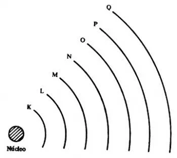
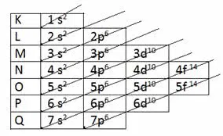
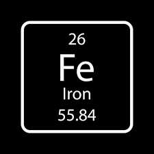

O que é distribuçao eletronica?
A Distribuição Eletrônica é a maneira como os elétrons se organizam ao redor do núcleo de um átomo. Compreender esse arranjo não é apenas um exercício de química teórica; é a chave para entender por que certos elementos reagem violentamente com a água enquanto outros são inertes, ou por que o ferro é magnético e o ouro conduz eletricidade.
Estrutura da eletrosfera
A eletrosfera não é uma "nuvem" bagunçada. Ela é organizada em níveis e subníveis de energia, seguindo as leis da mecânica quântica.
Existem 7 níveis de energia, representados pelas letras K, L, M, N, O, P e Q (ou números de 1 a 7). Cada nível suporta um número máximo de elétrons:
- K (1): 2 elétrons
- L (2): 8 elétrons
- M (3): 18 elétrons
- N (4): 32 elétrons
- O (5): 32 elétrons
- P (6): 18 elétrons
- Q (7): 8 elétrons
imagem para maior entendimento:

Dentro de cada nível, os elétrons se distribuem em subníveis: s, p, d, f.
- s: comporta até 2 elétrons.
- p: comporta até 6 elétrons.
- d: comporta até 10 elétrons.
- f: comporta até 14 elétrons.
O Diagrama de Linus Pauling
Os elétrons preenchem os subníveis seguindo uma ordem crescente de energia. Para facilitar essa visualização, utilizamos o Diagrama de Linus Pauling. O segredo aqui é seguir as setas diagonais, e não a ordem numérica simples.
A ordem de preenchimento correta é:

Exercício
Faça a distribuição eletronica dos seguintes elementos:


